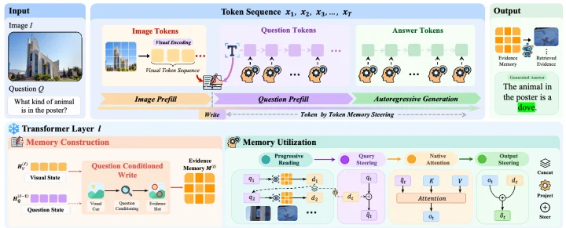

ReAccess: Look Once, Stay Focused with Efficient Test Time Memory
Builds a compact visual memory in a single image pass and retrieves question-relevant evidence during inference to support fine-grained visual reasoning.通过一次图像编码构建紧凑视觉记忆，并在推理时检索与问题相关的证据，支持细粒度视觉推理。
@misc{reaccess2026,
title = {{ReAccess: Look Once, Stay Focused with Efficient Test Time Memory}},
author = {Tianhao Chen and Yilong Fan and Yuheng Wu and Xiaobin Hu and Dongman Lee},
year = {2026},
eprint = {2611.20936},
archivePrefix = {arXiv},
doi = {10.48550/arXiv.2611.20936},
url = {https://arxiv.org/abs/2611.20936}
}